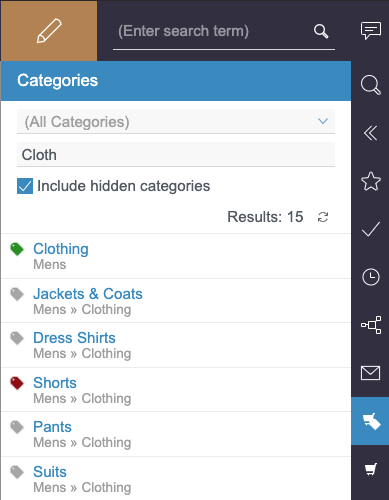

Configuring the project component
A project-specific configuration is required in order to use the {modulname} module. It is set up using the project component, which is already added to the reference project supplied.
To configure the project component, open the {manager} and select menu:Project properties[Project components].
A list of all existing project components is displayed in the main panel.
Select the entry {modulname} Project Configuration and click btn:[Configure] to open the associated dialog (see figure Configuration dialog for the project component).
|
The subsequent configuration is used by the module services. The service and all running clients must be restarted each time the configuration is changed. Otherwise, the change in question will not be applied either to the services or to the clients. |

- Base URL
-
Start by entering the
Base URL, which is derived from the URL of the {ccloud} instance and the ID of the site being used:https://<SUBDOMAIN INSTANCE>.demandware.net/s/<SITE ID>Based on this structure, a unique connection between the {fs} project and the {ccloud} site is always guaranteed.
The
Base URLfield is a mandatory field.
|
To avoid problems concerning the certificate, it must be ensured that the subdomain does not contain any periods in its name. |
- Client ID
-
The
Client IDis also a mandatory field. This is required in order to be able to use theOpen Commerce Shop API.
|
The |
- Password
-
The components of the {modulname} API require password-based authentication against {ccloud}. For this reason, a password that is defined when the API client is registered with {ccloud} is required in addition to the client ID.
- Refinements
-
Refinements that improve product searches are defined in this configuration field. Refinements are entered as key value pairs separated using commas.
|
Up to the first nine key value pairs entered are used ({ccloud} will not accept more than nine refinements). The format of the values of the key value pairs matches the format {ccloud} expects for refinement values. Both multiple values and sets of values can be entered for a refinement:
|
|
Since a refinement is also used for category searches, two special cases need to be considered: In the first case,
In this case, there are a total of ten refinement definitions, which is not permitted. Therefore, one of the refinements from the configuration is ignored so that the product search can be filtered by a category. In the second case,
In this case, there is a duplicate definition for the |
- Locale
-
The
Localeidentifies the language and region of the current project. A maximum of one ID for an active locale that is permitted for storefront requests in the site configured at the top of the dialog may be entered. If the field is left blank, thelocaleparameter will not be used in storefront requests. - Auth User
-
If access restriction is activated in {ccloud}, the
storefrontuser must be specified in this field. - Auth Password
-
The password belonging to the
storefrontuser is specified in this field.
- Product Page Template Mapping
-
One of the functions supported by the product report is the user-friendly creation of product pages, which use the page template Product Detail Page in the reference project. To enable this, this configuration field allows {sf} render templates to be mapped to {fs} page templates. The following rules apply here:
-
The field contains either no content at all or one or more mappings.
-
If the field remains empty, the use of product pages in the project is disabled.
-
Mappings are specified using a list separated by commas: <mapping>,<mapping>
-
Each mapping is arranged as follows: <isml_template>:<fs_template>
-
To configure a page template for all ISML templates that do not have an explicit mapping, the following form must be used: default:<fs_template>
-
- Default Folder (Product Pages)
-
To create a new product page, it is essential to know where the page is to be integrated into the structure. The reference name of the Product Pages structure folder has already been entered here. All new product pages within the reference project are created in this folder. If the field is left empty, the editor must select a menu level.
- Editable Folder (Product Pages)
-
This checkbox makes it possible to specify whether an editor can change the selection made in the
Default Folder (Product Pages)field. The function is activated initially. If it is then deactivated, the corresponding input component is hidden in the dialog for creating a category or product page. In this case, it is not possible for the editor to select or change the menu item for a newly created category or product page.
|
The field |
- Category Page Template Mappings
-
The mapping of page templates can be configured using this configuration field for the creation of category pages via the category report. The following rules apply here:
-
The field contains either no content at all or one or more mappings.
-
If the field remains empty, the use of category pages in the project is disabled.
-
Mappings are specified using a list separated by commas: <mapping>,<mapping>
-
Each mapping is arranged as follows: <isml_template>:<fs_template>[:fallback_category]
-
The third part of the mapping is optional and is used to specify a fallback category for category pages that are based on the specified ISML template
-
To configure a page template and an optional fallback category for all ISML templates that do not have an explicit mapping, the following form must be used: default:<fs_template>[:fallback_category]
-
|
We recommend using separate {fs} templates for product pages and category pages. |
- Default Folder (Category Pages)
-
In the same way as with product pages, for each new category page it is essential to know where the page is to be integrated into the structure. The reference name of the Category Pages structure folder has already been entered here. All new category pages within the reference project are created in this folder. If the field is left empty, the editor must select a menu level.
- Editable Folder (Category Pages)
-
In the same way as with the
Editable Folder (Product Pages)checkbox, here it is possible to specify whether editors can change the selection made in theDefault Folder (Category Pages)field. The function is activated initially. If it is then deactivated, the selection option is hidden in the dialog for creating a category page. In this case, it is not possible for the editor to select or change the menu item for a new page.
|
The field |
- Template Instantiation Script Uid
-
Select a script to be executed before and after category or product pages are created in this configuration field (the selection of a script is optional). The create_sfcc_item_wizard script specified is used to execute project-specific actions, which are required to generate the preview. In the reference project, it marks the created category or product page as translated for all languages.
|
Please note that only the code from the HTML channel of the script is executed. |
- View Type Priority
-
Images of products from {ccloud} are always provided in a range of sizes, but an image will not necessarily have been stored for every size. For this reason, the
View Type Priorityhas been provided so that you can define which image sizes you wish to incorporate, separating the information you enter with commas.In the case shown in the figure Configuration dialog for the project component, the
mediumimage associated with each product is identified and is used if it exists. If there is no medium image, thelargeimage is called up, followed by thesmallone if necessary.
|
As this is not a mandatory input field, it may therefore remain empty if you do not wish to define an order of priority. If this is the case, search results from a product query will be shown without an image. |
- Image Service Base URL
-
{ccloud} provides what is known as an
Image Service. If you wish to use it, you must specify the URL of the Image Service in the formhttp[s]://<image server host name>at this point. Product images are then called up via the Image Service.
|
Specifying the |
- Use Category Search
-
Next you must decide whether the reports for products and categories should provide filtering on categories in addition to the text search field. The corresponding checkbox
Use Category Search?is deactivated by default. In this case, the category filter is not applied in the context of the product or category search. The associated dropdown list is hidden in the report. If filtering according to category is required, the checkbox must be activated.
|
Filtering by category differs depending on the report used. In the report for the product search, filtering is possible across all categories. In the report for the category search, however, filtering is only possible via the top-level categories. |
- Show Category Report
-
This checkbox can be used to control the display of the category report. The checkbox is deactivated by default (i.e., only the report for product searches is active).
Figure 2. Category report - Test Configuration
-
Click the {testConf} button to check the entries that have been entered. For this, the
Client ID, theBase URLand - if available - theImage Service Base URLas well as the configurations for the product and category pages are taken into account.